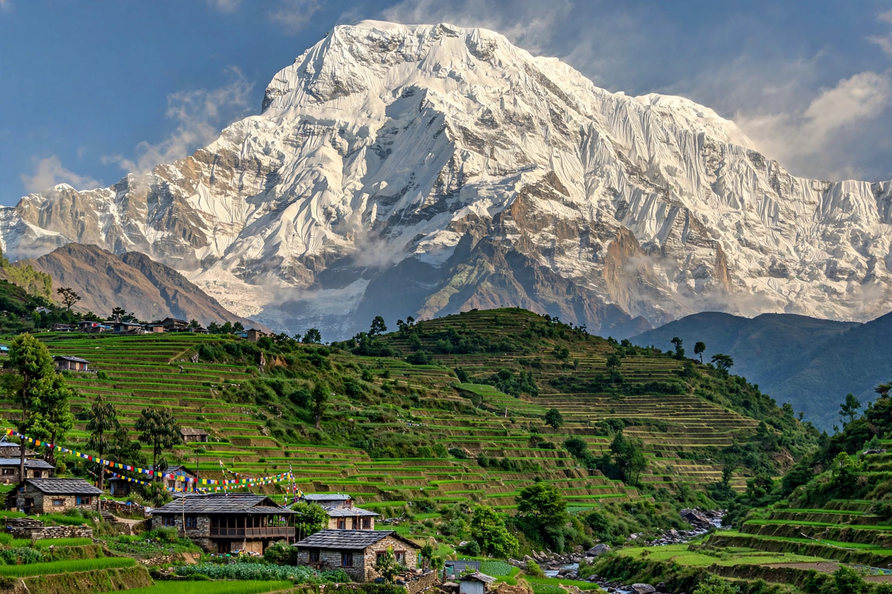

Annapurna
| Elevation | 8,091 m (26,545 ft) |
|---|---|
| Range | Himalayas, Nepal |
| Rank | 10th highest in the world |
| First ascent | 3 June 1950 — Maurice Herzog and Louis Lachenal |

[Image: the south face of Annapurna rising above green foothills and terraced fields in Nepal]Annapurna (8,091 metres / 26,545 ft) is a mountain in the Annapurna massif of the Himalayas in north-central Nepal. It is the tenth-highest mountain in the world, and was the first of the fourteen eight-thousanders to be climbed, in 1950. The name is Sanskrit, commonly translated as 'Goddess of the Harvests' or 'full of food'.
The Annapurna massif contains several major peaks; the surrounding Annapurna Conservation Area is Nepal's largest protected area and contains the Annapurna Circuit, one of the world's most famous long-distance treks.
First ascent
On 3 June 1950 a French expedition led by Maurice Herzog reached the summit: Herzog and Louis Lachenal summited without supplementary oxygen, three years before Everest was climbed. The descent was harrowing — both men suffered severe frostbite and lost toes, and Herzog lost fingers as well; his account, Annapurna, became one of the best-selling mountaineering books of all time.
Climbing danger
Annapurna I has historically had one of the highest fatality-to-summit ratios of any eight-thousander — for decades around a third of climbers who summited died, largely because of avalanche danger on its standard routes. The ratio has improved with modern forecasting and fixed ropes but the mountain remains among the most dangerous of the great peaks.
The Annapurna Sanctuary, a high glacial basin surrounded by the massif's peaks, and the circuit trek around the massif via the Thorong La pass (5,416 m) are among Nepal's most popular trekking destinations.